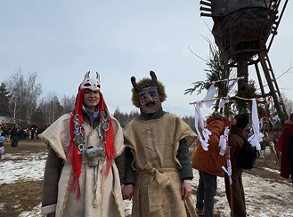

Масленица
Масленица. Проводы зимы, встреча весны, гулянья от души. Горы блинов на столе и в печи, спектакли и игрища, соревнования и масштабное сожжение мельницы. Мы отправимся в село Николо-Ленивец, где из года в год Масленицу празднуют с огромным размахом. В интернете можно найти множество восторженных видео, а я покажу обратную сторону празднования Масленицы здесь и то, как традиции превратились в стремление к получению прибыли.

предыстория праздника
Масленица — праздник с глубокими языческими корнями, связанный с весенним равноденствием. Славяне отмечали его задолго до появления христианства, радуясь пробуждению природы. Церковь адаптировала традицию, перенеся празднование на неделю перед Великим постом.
Изначально Масленица символизировала наступление нового года и надежду на богатый урожай. Ритуалы «прогоняли» зиму, призывая бога весеннего солнца Ярило. Сожжение чучела зимы символизировало уход всего старого. Важным элементом было поминовение предков, которое ассоциировалось с блинами — символами солнца.
Популярность блинов объяснялась и практическими соображениями: к концу зимы запасы истощались, а коровьего молока было в изобилии. Отсюда и пошло название «Масленица» — неделя, когда блины, щедро сдобренные маслом, становились главным блюдом.
С принятием христианства Масленица приобрела новые черты, превратившись в череду дней с определёнными обрядами, в которых переплелись языческие и православные традиции. Масленичная неделя делится на узкую (первые три дня) и широкую (остальные дни).
В начале недели хозяйки готовили дом к весне, а старейшины определяли место и порядок массовых гуляний. С четверга все работы прекращались, и начиналось время гостеваний и выпечки блинов. Завершает Масленицу Прощёное воскресенье.
История Масленицы не ограничивается блинами и сжиганием чучела. Это время шумных забав: катания на санках с горок, колядок и выступлений скоморохов, создававших атмосферу праздника и веселья.
Масленица — это яркий символ пробуждения, обновления и единства, который сквозь века доносит до нас тепло ушедших эпох и приглашает с радостью встречать грядущую весну
мое путешествие
Мое
Путешествие
Как же много я слышала о Масленице в Николо-Ленивце! Около двух лет я пыталась попасть туда, но билеты каким-то образом раскупали ещё до начала официальных продаж.
В 2025 году я основательно подошла к этому делу: нашла бота, где продажа билетов началась раньше официальной даты. И когда мне удалось «выбить» билет, я испытала такое безудержное счастье! Наконец-то я увижу всю эту феерию вживую. Дело в том, что Масленица в Николо-Ленивце — это не просто сожжение чучела. Каждая Масленица там — это огромный концептуальный спектакль, а сжигают вовсе не чучело, а многометровое символическое здание, арт-объект. В 2021 году это был замок, в 2022-м — Вавилонская башня, в 2023-м — Четвёртая стена, в 2024-м — Чёрная гора, а в 2025-м — мельница.
26-метровый арт-объект, который предстояло сжечь на закате, спроектировал сам основатель парка, художник Николай Полисских. В этом году литературный герой — Дон Кихот.
В книге Сервантеса битва Дон Кихота с мельницами, которые он принял за великанов, описана всего на половине страницы, а это мероприятие- более глубокое погружение и раскрытие этой истории.
Как же много я слышала о Масленице в Николо-Ленивце! Около двух лет я пыталась попасть туда, но билеты каким-то образом раскупали ещё до начала официальных продаж.
В 2025 году я основательно подошла к этому делу: нашла бота, где продажа билетов началась раньше официальной даты. И когда мне удалось «выбить» билет, я испытала такое безудержное счастье! Наконец-то я увижу всю эту феерию вживую. Дело в том, что Масленица в Николо-Ленивце — это не просто сожжение чучела. Каждая Масленица там — это огромный концептуальный спектакль, а сжигают вовсе не чучело, а многометровое символическое здание, арт-объект. В 2021 году это был замок, в 2022-м — Вавилонская башня, в 2023-м — Четвёртая стена, в 2024-м — Чёрная гора, а в 2025-м — мельница.
26-метровый арт-объект, который предстояло сжечь на закате, спроектировал сам основатель парка, художник Николай Полисских. В этом году литературный герой — Дон Кихот. В книге Сервантеса битва Дон Кихота с мельницами, которые он принял за великанов, описана всего на половине страницы, а это мероприятие- более глубокое погружение и раскрытие этой истории.
Я взяла билеты на трансфер туда-обратно из Москвы плюс стоимость самого билета, что в сумме составило 9500 рублей. «Сомнительно», — подумала я, но решила, что стоит посмотреть, что из этого выйдет. Как же я надеялась, что все окупится, и как же мои ожидания рухнули с грохотом!
Я взяла билеты на трансфер туда-обратно из Москвы плюс стоимость самого билета, что в сумме составило 9500 рублей. «Сомнительно», — подумала я, но решила, что стоит посмотреть, что из этого выйдет. Как же я надеялась, что все окупится, и как же мои ожидания рухнули с грохотом!


Начну с плюсов-костюмы. Приехав туда в своём скромном костюме (как на фото), я была поражена даже не столько арт-объектом, сколько людьми и их костюмами. Такое разнообразие образов, каждый продуман до мелочей, на каждый наверняка ушло больше месяца работы! Ты идёшь по территории с открытым ртом, осознавая, что оказался в таком уникальном месте — точке сбора столь творческих и интересных людей. Каждый костюм хочется рассматривать подолгу.
Второй плюс — качественно проработанный арт-объект мельницы. Сколько бы я ни ходила вокруг него, всё равно не могла никак насмотреться. В этом году арт-объект строили около двух месяцев. И в реальности это действительно масштабное и впечатляющее зрелище.
Третий — блинкоины. Участвуя в соревнованиях и различных испытаниях, можно выиграть некоторое количество блинкоинов, которые потом можно обменять на настоящие блины. Очень крутая фишка, как мне показалось.
Наверное, на этом плюсы, к сожалению, заканчиваются. Как бы я ни старалась не быть скучным или придирчивым критиком, негативные впечатления омрачили этот день.
Начну с плюсов-костюмы. Приехав туда в своём скромном костюме (как на фото), я была поражена даже не столько арт-объектом, сколько людьми и их костюмами. Такое разнообразие образов, каждый продуман до мелочей, на каждый наверняка ушло больше месяца работы! Ты идёшь по территории с открытым ртом, осознавая, что оказался в таком уникальном месте — точке сбора столь творческих и интересных людей. Каждый костюм хочется рассматривать подолгу.
Второй плюс — качественно проработанный арт-объект мельницы. Сколько бы я ни ходила вокруг него, всё равно не могла никак насмотреться. В этом году арт-объект строили около двух месяцев. И в реальности это действительно масштабное и впечатляющее зрелище.
Третий — блинкоины. Участвуя в соревнованиях и различных испытаниях, можно выиграть некоторое количество блинкоинов, которые потом можно обменять на настоящие блины. Очень крутая фишка, как мне показалось.
Наверное, на этом плюсы, к сожалению, заканчиваются. Как бы я ни старалась не быть скучным или придирчивым критиком, негативные впечатления омрачили этот день.
Дело в том, что нас привезли на место в час дня, а выехали мы из Москвы в 10, хотя должны были в 9. Но это не критично, на самом деле. Приехав туда в 13:30, а сожжение было только в 18:30, всё это время я искала, чем бы себя занять. Не подумайте, там было, на первый взгляд, много различных интерактивов, но когда начинаешь ходить и основательно изучать, что есть, то понимаешь, что большинство из них — детские игры и развлечения. Для взрослых развлечениями были только качели, крутящиеся вокруг столба, деревянные блины, которые нужно было метать в печь (самое популярное развлечение, очередь к нему была многометровой), и перетягивание каната. Поговорив с другими людьми, я поняла, что для взрослых это всё, что есть. Так чем же они занимались всё это время? Скажу прямо — выпивали. Многие привезли с собой огромное количество алкоголя и распивали его открыто. С одной стороны, их можно понять: ни одного места, где можно согреться. Всё это время мы были вынуждены стоять на улице, а тогда ещё было холодно и шёл снег. Хорошо, что там была палатка от «Яндекс Еды» с искусственным камином из горелки, там мы все и столпились, пытаясь судорожно согреться, а кто-то грелся по-своему. С другой стороны, под конец вечера можно было легко встретить «пьяных в стельку» — то ещё зрелище, особенно когда тебе приходится ехать с ними в одном автобусе.
Дело в том, что нас привезли на место в час дня, а выехали мы из Москвы в 10, хотя должны были в 9. Но это не критично, на самом деле. Приехав туда в 13:30, а сожжение было только в 18:30, всё это время я искала, чем бы себя занять. Не подумайте, там было, на первый взгляд, много различных интерактивов, но когда начинаешь ходить и основательно изучать, что есть, то понимаешь, что большинство из них — детские игры и развлечения. Для взрослых развлечениями были только качели, крутящиеся вокруг столба, деревянные блины, которые нужно было метать в печь (самое популярное развлечение, очередь к нему была многометровой), и перетягивание каната. Поговорив с другими людьми, я поняла, что для взрослых это всё, что есть. Так чем же они занимались всё это время? Скажу прямо — выпивали. Многие привезли с собой огромное количество алкоголя и распивали его открыто. С одной стороны, их можно понять: ни одного места, где можно согреться. Всё это время мы были вынуждены стоять на улице, а тогда ещё было холодно и шёл снег. Хорошо, что там была палатка от «Яндекс Еды» с искусственным камином из горелки, там мы все и столпились, пытаясь судорожно согреться, а кто-то грелся по-своему. С другой стороны, под конец вечера можно было легко встретить «пьяных в стельку» — то ещё зрелище, особенно когда тебе приходится ехать с ними в одном автобусе.
Цены оставляют желать лучшего. Блины за 200 рублей — это ещё терпимо, но никто не предупредил, что лучше брать еду с собой (как и тёплые вещи). Провести там весь день на одних блинах сложно. А полноценный обед и ужин в виде плова за 700 рублей или шашлыка за 600-900 рублей бьют по карману. Выбор маленький, а цены большие.
Цены оставляют желать лучшего. Блины за 200 рублей — это ещё терпимо, но никто не предупредил, что лучше брать еду с собой (как и тёплые вещи). Провести там весь день на одних блинах сложно. А полноценный обед и ужин в виде плова за 700 рублей или шашлыка за 600-900 рублей бьют по карману. Выбор маленький, а цены большие.
Всё мероприятие — это репрезентация традиционной культуры со стороны современного искусства. Поэтому, здесь не просто скоморохи, а рыцарские перформансы.
Если тема — «Дон Кихот», то куда же без главного героя? Он был, да только в стельку пьяный. Сценки с постоянно падающим и шатающимся рыцарем, невнятно говорящим и с бегающими глазами. На фоне играет юмористическая живая музыка из барабанов, дудок и т.д. Коня Росинанта заменяет красный мотоцикл с коляской. Основное выступление было в 17:30, а перед этим раз в час устраивали короткие выступления. Поднимали костюмированных людей за руки на тюки сена, делали им комплименты, танцевали все вместе под живую музыку и бросались опилками.
Перед тем, как Дон Кихот бросился в атаку на мельницу на своём красном мотоцикле с копьём, он выкрикнул: «За вас, за веру в чудо! Я выйду против тебя, чудовище! — рыцарь обращался к замку с мельницами. — Чудовище, которое даёт нам всё, забирая взамен бессмертную душу. Теперь я здесь, и ничто меня не остановит!» Затем толпа людей с самодельными копьями подхватила его порыв и подожгла главный арт-объект. В толпе слышалось: «И за это мы заплатили 30 тысяч…»
Всё мероприятие — это репрезентация традиционной культуры со стороны современного искусства. Поэтому, здесь не просто скоморохи, а рыцарские перформансы.
Если тема — «Дон Кихот», то куда же без главного героя? Он был, да только в стельку пьяный. Сценки с постоянно падающим и шатающимся рыцарем, невнятно говорящим и с бегающими глазами. На фоне играет юмористическая живая музыка из барабанов, дудок и т.д. Коня Росинанта заменяет красный мотоцикл с коляской. Основное выступление было в 17:30, а перед этим раз в час устраивали короткие выступления. Поднимали костюмированных людей за руки на тюки сена, делали им комплименты, танцевали все вместе под живую музыку и бросались опилками.
Перед тем, как Дон Кихот бросился в атаку на мельницу на своём красном мотоцикле с копьём, он выкрикнул: «За вас, за веру в чудо! Я выйду против тебя, чудовище! — рыцарь обращался к замку с мельницами. — Чудовище, которое даёт нам всё, забирая взамен бессмертную душу. Теперь я здесь, и ничто меня не остановит!» Затем толпа людей с самодельными копьями подхватила его порыв и подожгла главный арт-объект. В толпе слышалось: «И за это мы заплатили 30 тысяч…»
Николо-Ленивец предлагает интересный взгляд на традиционный праздник, сохраняя символ блина, но интерпретируя чучело. Это уже не просто Масленица, а фестиваль современного искусства. Любителям классики, возможно, стоит поискать другие места, а тем, кто готов взглянуть на привычные образы под новым углом, это может стать хорошим опытом. Совет: приезжайте на машине к 15:00, чтобы не устать, и не забудьте тёплые вещи!

Масленица в Николо-Ленивце — это подтверждение того, что традиционные праздники — это живая, динамичная культура, способная меняться и адаптироваться к современности, приобретая новые формы и образы. Вопрос лишь в том, готовы ли люди к таким трансформациям?
Николо-Ленивец предлагает интересный взгляд на традиционный праздник, сохраняя символ блина, но интерпретируя чучело. Это уже не просто Масленица, а фестиваль современного искусства. Любителям классики, возможно, стоит поискать другие места, а тем, кто готов взглянуть на привычные образы под новым углом, это может стать хорошим опытом. Совет: приезжайте на машине к 15:00, чтобы не устать, и не забудьте тёплые вещи!
Масленица в Николо-Ленивце — это подтверждение того, что традиционные праздники — это живая, динамичная культура, способная меняться и адаптироваться к современности, приобретая новые формы и образы. Вопрос лишь в том, готовы ли люди к таким трансформациям?